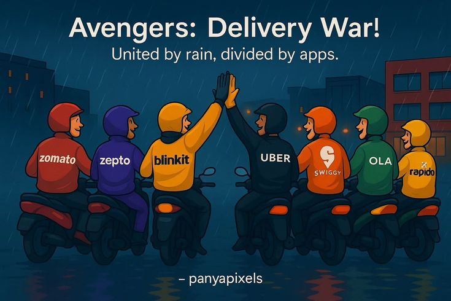

Swiggy is a popular online food delivery platform in India. It connects customers with restaurants and delivery partners. Although Swiggy has grown rapidly, it faces several challenges in managing food delivery, customers, restaurants and delivery partners.
Delivery is one of the major costs for Swiggy. Fuel expenses, delivery partner payments and incentives increase the overall cost of delivering an order.
Swiggy faces strong competition in the food delivery market. Competition can result in discounts, offers and higher spending to attract and retain customers.
Delivery partners may face traffic, bad weather, fuel expenses, long working hours and difficulty finding customer locations. These issues can affect delivery time.
Customers may complain about late delivery, wrong orders, missing items, damaged food or problems with refunds. Handling a large number of complaints is a challenge.
Food quality can sometimes be affected during transportation. Food may become cold, spill from the container or get damaged if it is not packed properly.
Swiggy works with many restaurants. Managing restaurant relationships, commissions, payments, discounts and order quality can be challenging.
Heavy traffic, rain, flooding and extreme weather conditions can increase delivery time and make it difficult for delivery partners to reach customers.
Swiggy depends heavily on its mobile application and technology. App errors, payment failures, GPS problems and server issues can affect the ordering and delivery process.
Customers expect food to be delivered quickly, safely and at an affordable price. Meeting these expectations consistently is a major challenge.
Swiggy needs to balance revenue with expenses such as delivery, technology, marketing, customer support and promotional offers. Maintaining sustainable profitability is an important challenge.